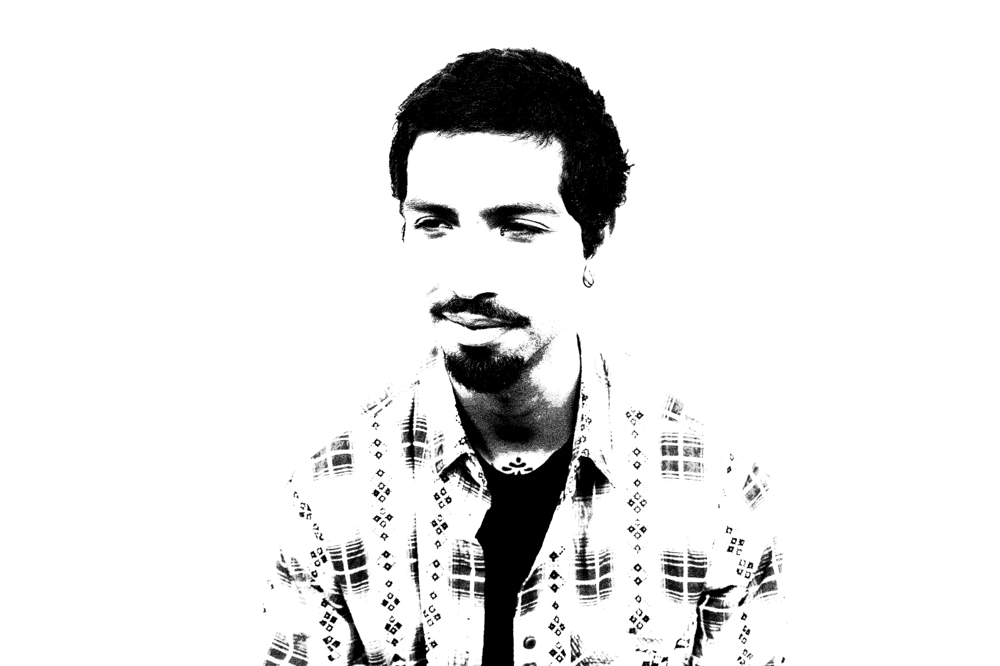
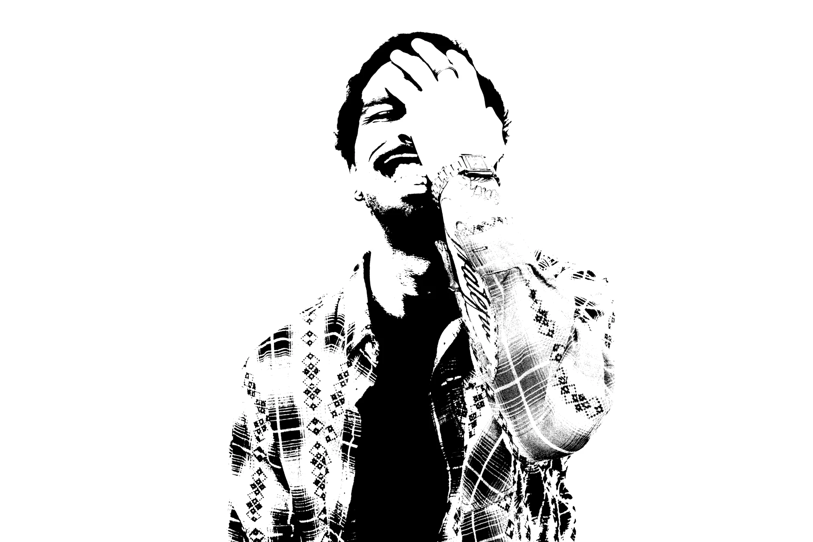

Samí Guerrero


i’m a cuban born multi-disciplinary artist based in miami, florida.
an observer of the natural world, a healer, and a powerful manifestor.
i create because it’s a need, like food and water.


i’m a cuban born multi-disciplinary artist based in miami, florida.
an observer of the natural world, a healer, and a powerful manifestor.
i create because it’s a need, like food and water.